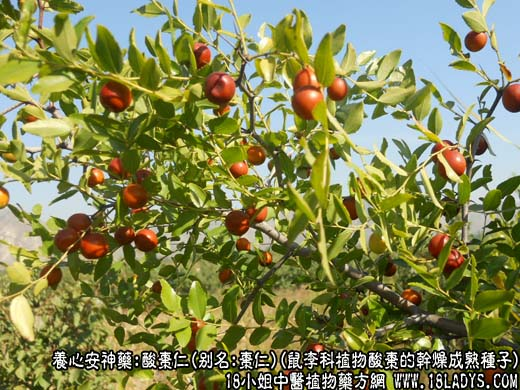
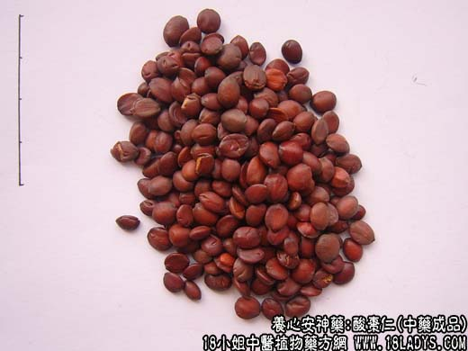
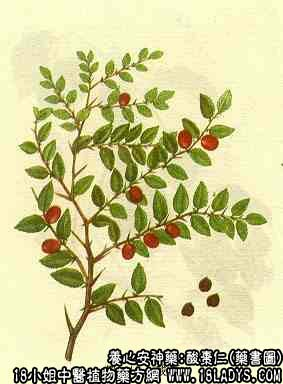

本品为常用中药。始载《神农本草经》，列为上品。
别名：枣仁。
来源：为鼠李科植物酸枣的干燥成熟种子。
植物形态：落叶灌木或小乔木，老枝干，灰褐色至棕褐色；幼枝绿色；枝上有针形刺和反曲刺。叶互生具短柄，叶片椭圆形至卵状披针形，长2.5～5厘米，宽1.2～3厘米，先端钝尖，基部偏斜，边缘有细锯齿，主脉3条。花2～3朵簇生叶腋，黄绿色，小形，花柄短，萼片五裂，花五瓣，雄蕊五枚，子房二室，花柱短，柱头2裂。核果近球形，直径1～1.5厘米，熟时红棕色。味酸。
产地：主产于河北、河南、陕西、辽宁等省，此外内蒙古、山西、安徽亦有生产。
性状鉴别：种子呈扁圆形，长5～9毫米，宽5～7毫米，中部厚约3毫米。表面棕色或紫褐色，微有光泽。一面较平坦，中间有条隆起的纵线纹，另一面微隆起，一端有凹陷。种皮革质坚脆，内有浅黄色子叶两片，富油性。气微，味淡。以粒大饱满，皮紫红色，无核壳者为佳。
主要成分：含皂甙，主要为白桦脂酸、白桦脂醇；又含脂肪油（约32%），固甾醇、蛋白质。有机酸等。
功效与作用：养肝、安心、安神、敛汗，其作用为：
1、镇静。抑制中枢神经系统，有较恒定的镇静作用（其作用强于茯神）。生用效力较好，久炒至油枯后失去镇静效能。另有报道指出，其水溶性成分有催眠作用。
2、降压。对实验运动能引起较持久的血压下降。
3、兴奋子宫。
炮制：生用或炒用。
性味：甘，平。
归经：入心、脾、肝经。
功能：宁心安神，敛汗生津。
主治：虚烦不眠，惊悸健忘，虚汗烦渴。
临床应用：为治疗虚烦不眠的常用药。
1、治疗失眠，适用于血虚而致的心烦，不眠，对于兼有心悸不安、虚汗的患者尤为适合（可见于神经衰弱，尤其心脏神经宫能症）。常配茯神、龙眼肉和补益气血之品。方如归脾汤。症较重时宜配用其他安神药和珍珠母、夜交藤等，方如加减酸枣仁汤，临床疗效较好。
附：本品药性和缓，在安神的同时又兼有一定的滋养强壮作用。一般炒用。但从实验资料和临床经验而论，酸枣仁生用或炒用各有适应证，凡表现虚热、精神恍惚或烦躁疲乏者宜生用，或半生半炒，取其镇静效力较好；而胆虚不宁，兼有脾胃虚弱、消化不良、烦渴、虚汗者，宜炒用。
用量：3～19g，大剂可用至21～24g，甚至30g。有报道谓用量过大可引起昏睡甚至失去知觉，值得注意。
处方举例：加减酸枣仁汤：酸枣仁24g，茯神12g，朱砂0.45g（冲），党参9g，白芍12g，知母9g，川芎3g，夜合花9g，夜交藤15g，甘草3g，水煎服。
枣仁止汗汤：炒酸枣仁15g，甘草3g，水煎服。